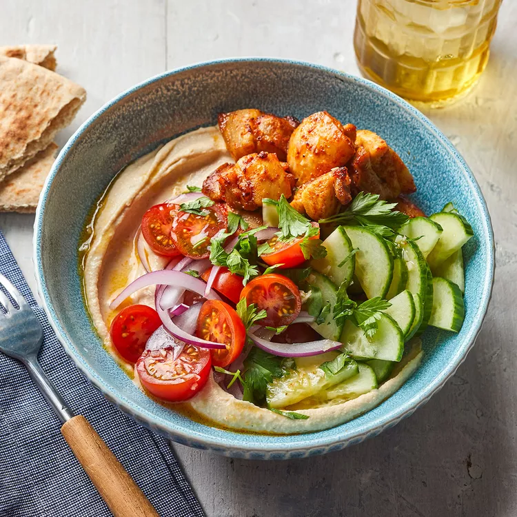

Chicken-Hummus Bowl

Description
Instead of using hummus as a dip, use it as a healthy and protein-packed base for your bowl and top it with spiced chicken and fresh veggies!
Serves 4:
- 468 Calories
- 24g fat
- 35g protein
- 28g carb
Ingredients
- 1 lb. boneless, skinless chicken thighs , trimmed and cut into 1-in. pieces
- 3 Tbsp. extra-virgin olive oil
- 1 tsp. ground cumin
- 1/4 tsp. salt, divided
- 2 garlic cloves, finely chopped
- 2 Tbsp. lemon juice
- 2 cups Hummus
- 2 cups cherry tomatoes, halved
- 1 cup cucumber, halved and sliced
- 1/4 cup red onion, slivered
- 1/4 cup fresh parsley, chopped
Steps
- Position rack in upper third of oven; preheat broiler to high. Line a rimmed baking sheet with foil.
- Toss chicken with 1 tablespoon oil, cumin , paprika, cayenne, and 1/8 tsp. salt. Arrange evenly on prepared pan. Broil until just cooked through, 5 to 7 minutes.
- Meanwhile, mash garlic and remaining 1/8 teaspoon salt into a paste with a fork. Transfer to a medium bowl, and whisk in lemon juice and remaining 2 tablespoons oil. Add chicken and let stand 5 minutes, stirring occasionally.
- Spoon hummus into shallow bowls. Top evenly with chicken and any remaining dressing, tomatoes, cucumbers, onion, and parsley.